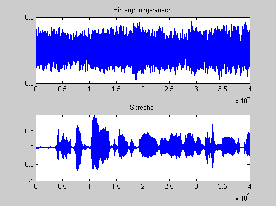
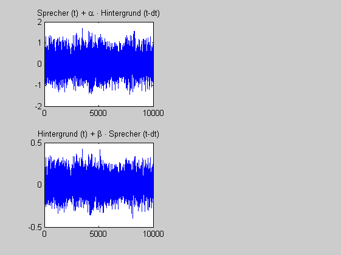
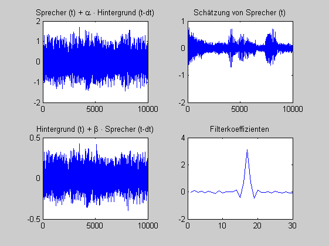

Contents
Störunterdrückung
durch einen adaptiver Prädiktor
Ein Reporter macht ein Interview an einer stark befahrenen
Straße. Skizzieren Sie ein adaptives System (\(<5 \) Blöcke) zur
Kompensation des Straßenlärms und beschreiben Sie es in 2 bis 3
Sätzen.
(c) HSM, B. Wir 2.8.2012
clear all; close all;
Signale
Z = 40000;
[x_r,f_s,NBITS] = wavread('road.wav');
x_r = resample(x_r,1,4); f_s = f_s/4;
x_r = x_r(1:Z);
f_s
NBITS
[x_n,f_s,NBITS] = wavread('speech_dft.wav');
x_n = resample(x_n,1,2); f_s = f_s/2;
x_n = x_n(1:Z)';
f_s
NBITS
figure(1); subplot(2,1,1);
plot( x_r); title('Hintergrundgeräusch');
subplot(2,1,2);
plot(x_n); title('Sprecher');
f_s =
11025
NBITS =
16
f_s =
11025
NBITS =
16

Simulation der Störung
D = 0.5;
A = 4
B = 0.2
delay = round((D/330)*f_s)
y_n = x_n(delay:end) + A * x_r(1:end-delay+1);
y_r = B * x_n(1:end-delay+1) + x_r(delay:end);
figure(2); subplot(2,2,1);
plot( y_n(1:10000)); title('Sprecher (t) + \alpha \cdot Hintergrund (t-dt)');
subplot(2,2,3);
plot(y_r(1:10000)); title('Hintergrund (t) + \beta \cdot Sprecher (t-dt)');
soundsc(y_n,f_s)
A =
4
B =
0.2000
delay =
17

Signalrekonstruktion
N = 30;
w = zeros(1,N);
STEP = 0.07;
[x_n_dach,e,w] = lms(w,y_r,y_n,STEP);
soundsc(e,f_s)
subplot(2,2,2); plot(e(1:10000)); title('Schätzung von Sprecher (t)');
subplot(2,2,4); plot(w); title('Filterkoeffizienten')
